Naveen A
Final-year Physical Design Engineer seeking RTL design and verification roles in semiconductor engineering. Drawn to companies working on complex digital SoCs where design quality, verification closure, and silicon reliability are taken seriously. Aiming to contribute through rigorous RTL coding, structured testbench development, and clean design-to-handoff discipline built from real tapeout-adjacent and tool-flow experience. Long-term interest lies in physical design and full RTL-to-GDS ownership.
Naveen consistently demonstrated strong technical understanding, especially in digital design concepts, along with a keen interest in learning advanced VLSI topics. He stands out for his dedication, curiosity, and ability to apply concepts practically. His proactive approach and willingness to take on challenges make him a promising engineer in the semiconductor domain. I strongly recommend Naveen for opportunities in ASIC/SoC design.
Internships
- Worked on RTL design and verification of digital circuits in a semiconductor environment.
- Gained hands-on exposure to industry-grade EDA tools and VLSI design flows.
- Collaborated with experienced engineers on silicon-level design tasks.
- Applied knowledge of Verilog/SystemVerilog in a professional setting.

- Officially awarded the Samsung Fellowship under the India Semiconductor Workforce Development Program (ISWDP), organized by IISc, Samsung Semiconductor India Research, and Synopsys.
- Got hands-on with the Synopsys Sentaurus TCAD suite — Workbench, SDE, and Visual — running MOS/diode device physics and 3D/thermal analysis.
- Three months ago, TCAD was a tool I'd read about. Now it's one I actually know how to use.
- Built device structures through scripts, worked on UCS coordinate systems, device region compositions, and placement geometry for real semiconductor structures.
- Ran device simulations, read I-V curves, and analysed graph behaviour for physical model parameters.
- Scored 78% in the final evaluation covering Advanced Device Simulation and Meshing Strategies.
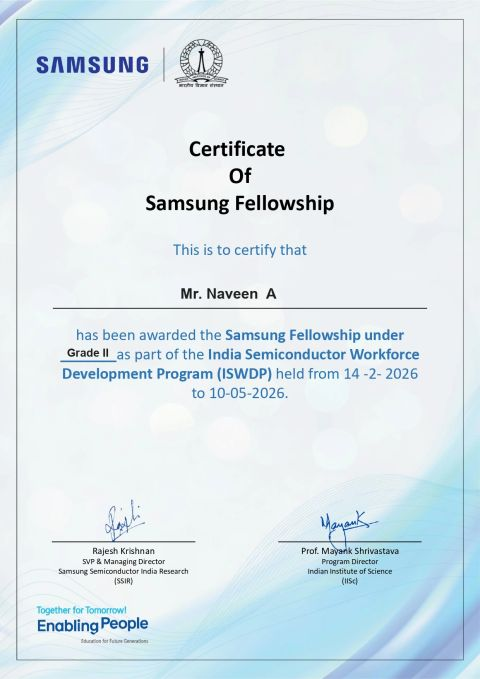
- Interfaced a LiDAR sensor for distance detection & mapping with a TI microcontroller.
- Designed UART communication protocols for sensor-to-controller data transfer.
- Developed interrupt-driven firmware and ring buffer design for real-time data handling.
- Created a complete driver library for the LiDAR sensor project.
- Gained in-depth knowledge in firmware development for real-time embedded projects.
- Designed and deployed an IoT sensor-based monitoring system on Raspberry Pi 5 and ESP32 for real-time gut-health bio-data acquisition.
- Integrated Microsoft Azure Cloud for scalable storage and automated data pipelines.
- Implemented wireless communication protocols (Wi-Fi, BLE) for seamless sensor-to-cloud data transmission.
- Collaborated cross-functionally to deliver a production-ready data pipeline; demonstrated strong analytical thinking and adaptability in a fast-paced R&D environment.
- Designed and validated custom PCB schematics for the wearable sensor module.
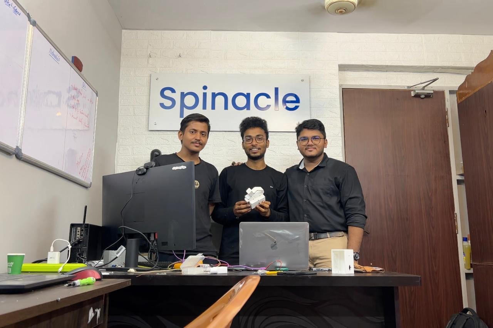
Education Qualification
Rajalakshmi Institute of Technology
CGPA: 8.78 / 10
Affiliated to Anna University, Chennai · NAAC A++ Accredited · CBSE
Expected Graduation

Maven Silicon
Currently Pursuing
Pursuing
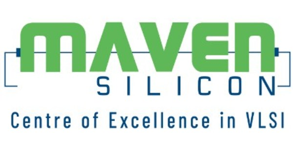
Velammal Vidhyashram
87.5% · Science Stream (Physics, Chemistry, Mathematics, Biology)
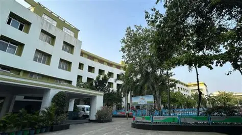
Velammal Vidhyashram
86.6%
Skills & Tools
- VLSI-first design methodology: RTL → Synthesis → Simulation → Physical Design → GDSII
- Prototype-to-PCB product development pipeline
- IoT system architecture & cloud integration (Azure)
- Cross-functional hardware/software co-design
- Git version control & collaborative development
- Technical writing & peer mentoring (1,755 LinkedIn impressions/week)
Projects
VLSI · RTL · FPGA
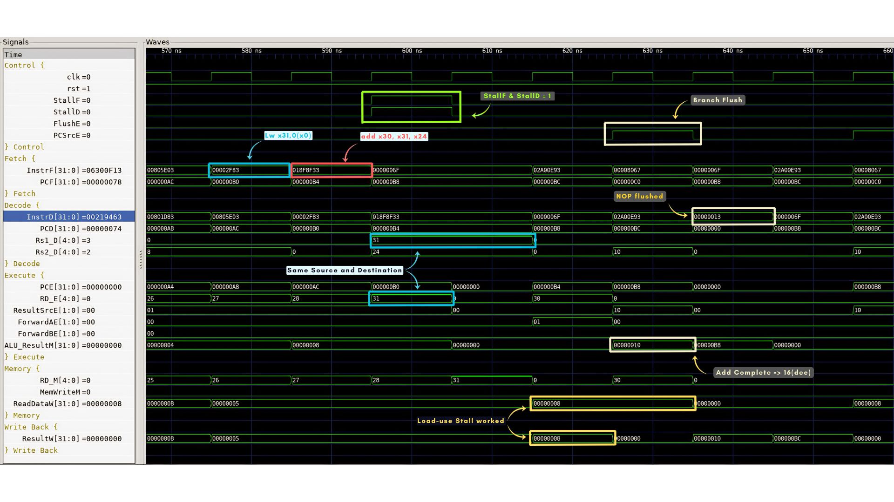
RISC-V Pipelined Processor
Upgraded a RISC-V pipeline to achieve ~95% RV32I coverage. Fixed broken branch logic, added jump support (JAL/JALR), and implemented a hazard unit to manage load-use stalls. Cross-verified 49 instructions against the RISC-V GCC compiler using a self-checking testbench. Simulation done in Icarus Verilog / GTKWave.
View on GitHub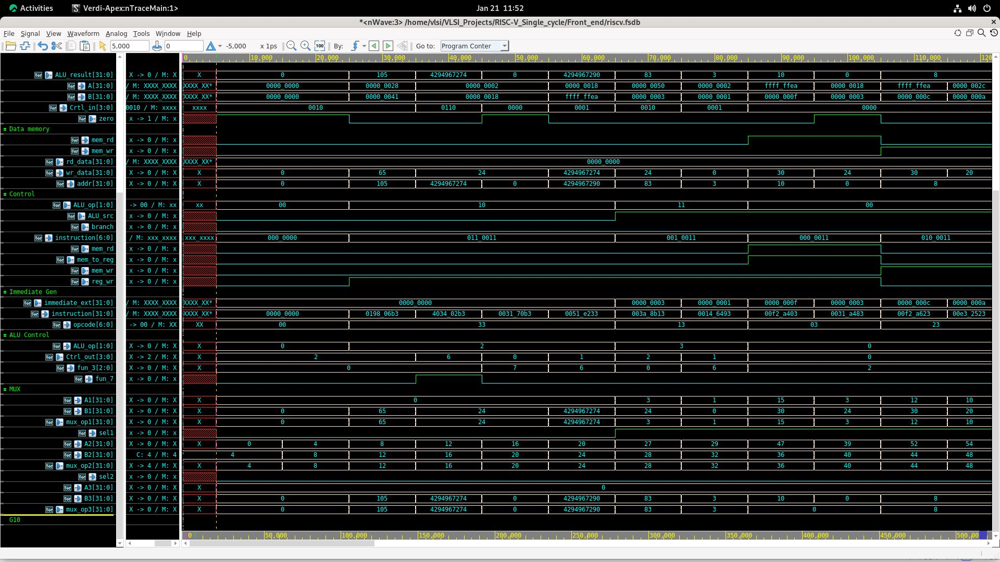
RISC-V Single-Cycle Processor
Designed and implemented a single-cycle RISC-V processor from scratch in Verilog — functional and verified. Implements R-type (ADD, SUB, AND, OR), I-type (ADDI, ORI), Load/Store (LW, SW), and Branch (BEQ). All major building blocks: Program Counter, Instruction Memory, Register File (32 registers), ALU, Data Memory, Immediate Generator, and Control Unit. Verified with simulation waveforms in VCS and Verdi (Synopsys).
View on GitHub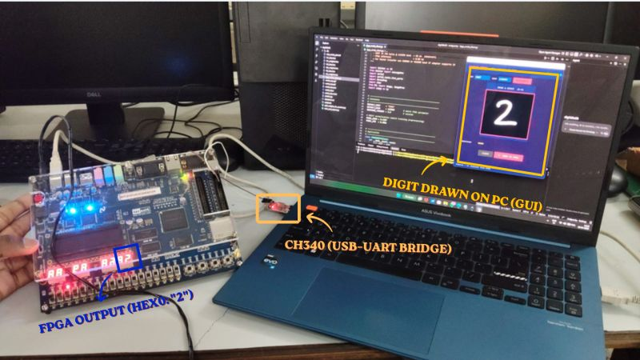
Neural Network Inference on Pure Silicon
Built a 4-layer MLP (784→128→64→32→10) implemented as pure RTL running on an Altera DE2 Cyclone II FPGA. The FPGA receives hand-written digits via USB-UART, unpacks INT4-quantized weights from ROM, runs 111,000 MAC operations through ReLU layers, and displays the result on the HEX seven-segment display — all in 2.2ms. Achieved 97% MNIST test accuracy with 81% logic element utilisation using time-multiplexed MAC and fixed-point arithmetic.
View on LinkedIn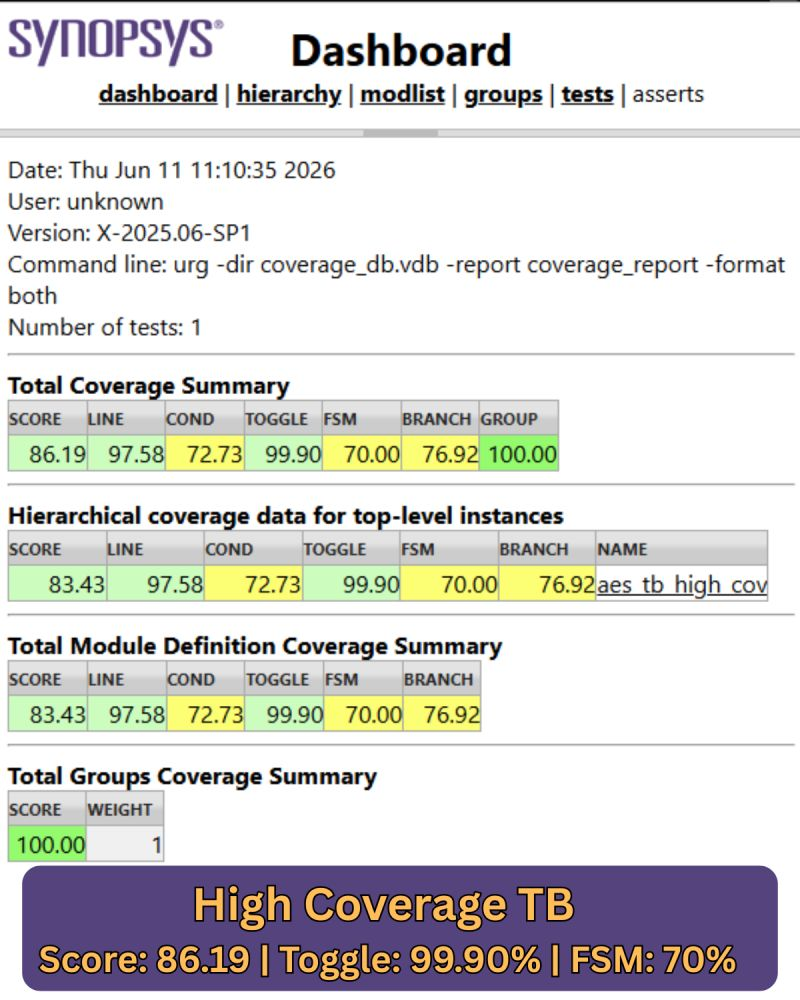
AES Encryption Engine – RTL Verification
Verified an AES-128 encryption engine in RTL using a comprehensive SystemVerilog testbench. Achieved an 86.19% overall coverage score with 97.58% line coverage, 99.90% toggle coverage, and 100% group coverage. Built a high-coverage testbench targeting all FSM states and branch conditions using Synopsys VCS and Verdi for simulation and waveform analysis. Structured test plan covered encryption rounds, key schedule, and S-box corner cases.
LinkedIn GitHub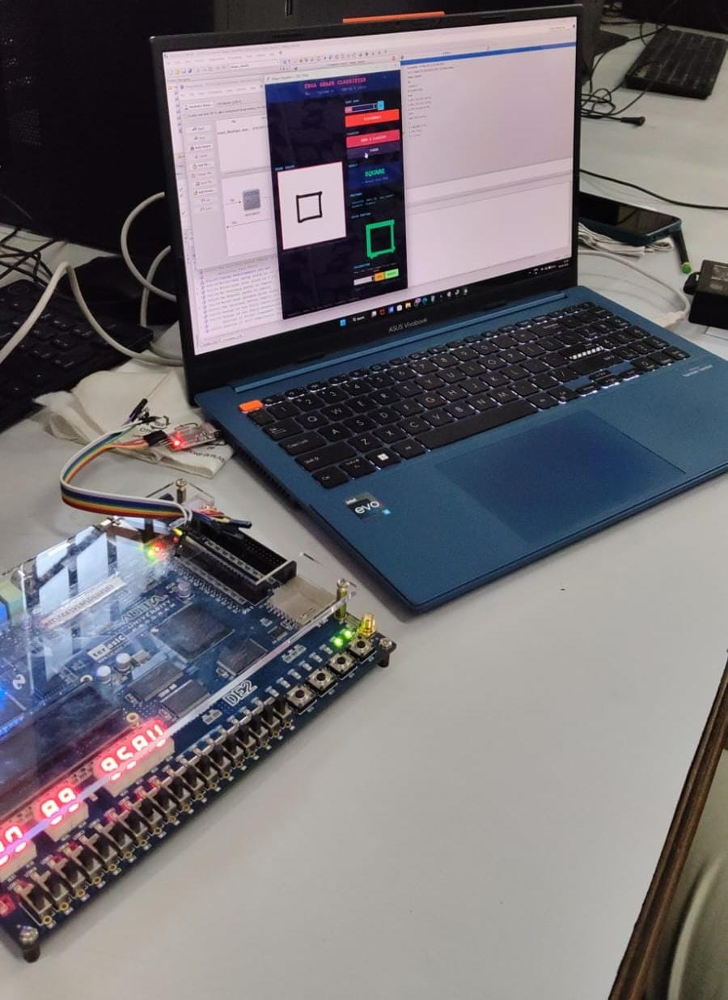
Shape Classifier – FPGA + Python Pipeline
A real-time shape-classification system: a Python GUI streams a hand-drawn 28×28 bitmap over UART to an Altera DE2 FPGA, which classifies the shape in 20ns using purely combinational Verilog and fixed-point arithmetic. The FPGA extracts 5 geometric features (area, aspect ratio, row variance, symmetry, perimeter) via an FSM, then applies a nearest-centroid weighted L1 distance classifier — all in a single clock cycle. No floating-point units, no embedded multipliers, no DSP blocks. Supports Circle, Square, Rectangle, and Triangle.
View on GitHub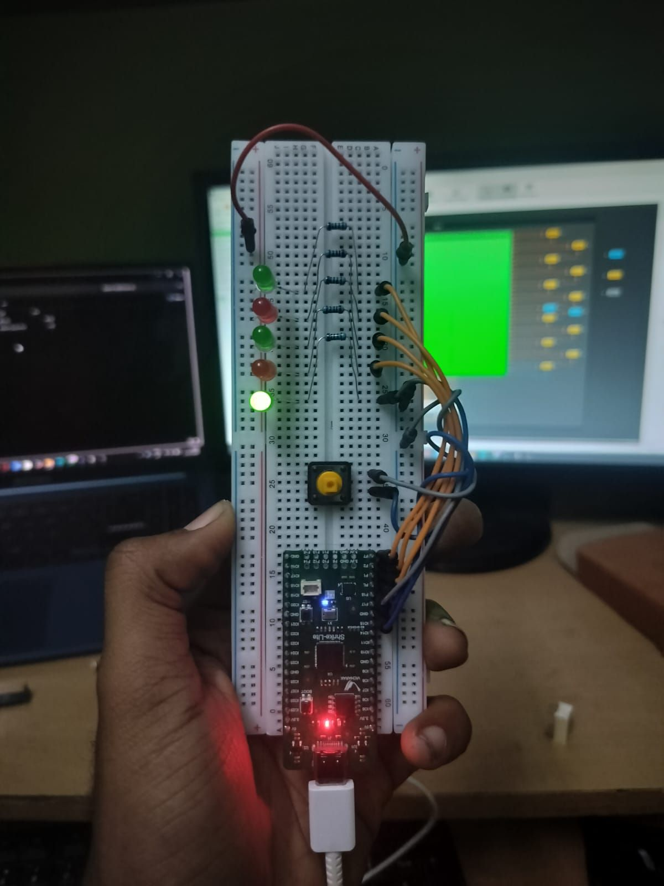
RISC-V SoC on Vicharak Shrike FPGA
Built a complete RISC-V computer on a $4 Vicharak Shrike FPGA board using the SERV (SErial RISC-V) CPU — the world's smallest RISC-V processor. The SoC includes a SERV CPU core (200 LUTs), 4KB RAM, UART (115200 baud), a timer, and LED control — all on a Wishbone bus — using just 420 of 1120 LUTs (37%). Firmware boots to an interactive command prompt supporting help, about, shutdown, and a real-time 3D spinning donut rendered in ASCII math.

Space Fighter – FPGA Game
Implemented a fully playable Space Fighter shooting game on an Altera DE2-115 FPGA — no CPU, no OS, no abstraction. Pure Verilog describing every gate. Features a VGA timing controller (640×480 @ 60Hz) built from scratch, pixel-level sprite rendering via bitfield ROMs (airship, enemies, lives icons), hardware-debounced button inputs with a shoot-latch, 3-enemy wave AI with directional movement, and a starfield + score bar + HUD — all computed per pixel, no framebuffer.
View Project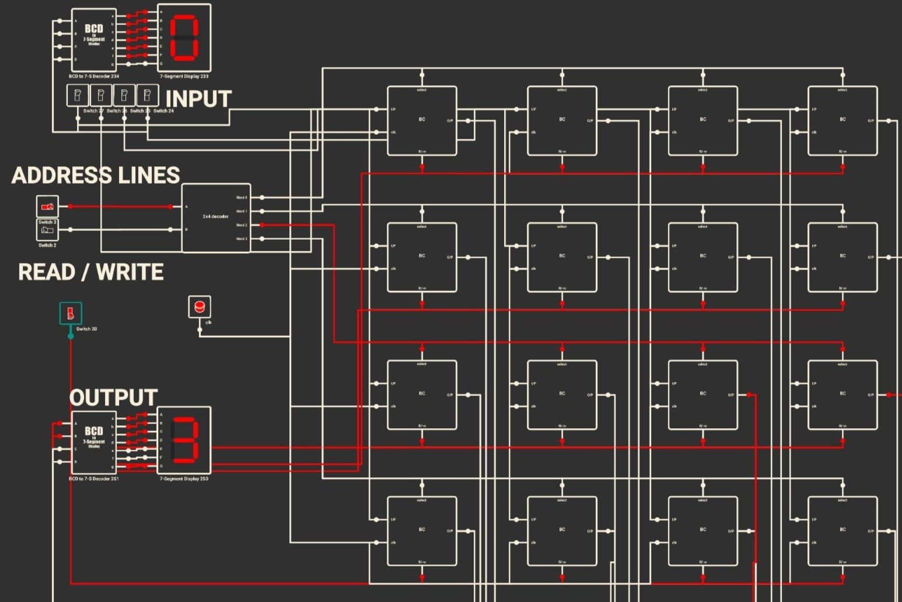
MemoryCore – 4×4
Designed and built a 4×4 bit RAM module with full address decoding, read/write control logic, and BCD 7-segment display. Explored mixed flip-flop types (D, JK, SR, T) to study sequential circuit behaviour. RTL model also implemented in Verilog.
View on GitHubEmbedded Systems & IoT

Mento Band
Built a dual ESP32-based wearable athlete monitoring platform tracking heart rate, blood pressure, EMG, and biomechanics in real-time. Predictive AI delivers real-time injury risk assessment and performance optimization insights. Selected for the SIH 2025 Senior Hardware Grand Finale (8–12 Dec 2025, LPU).
GitHub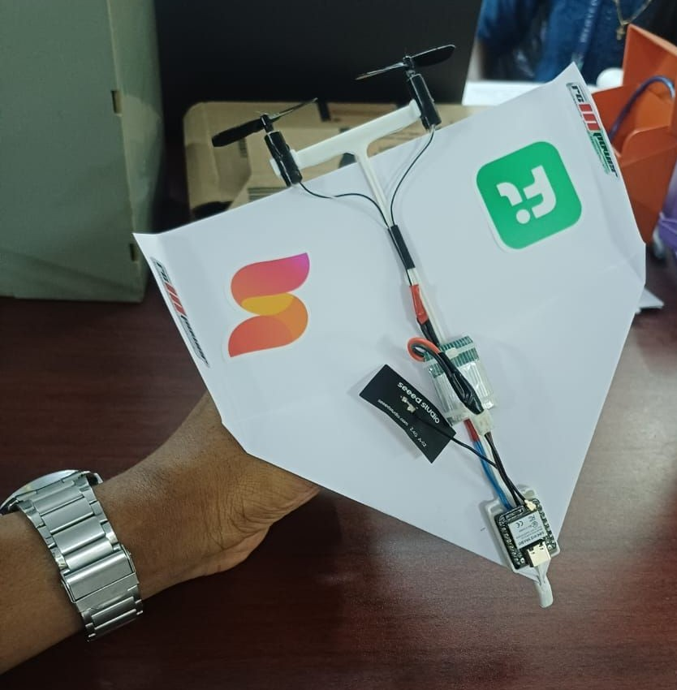
Sky-Fi
Engineered a low-cost ESP32-powered remote control plane with real-time video streaming and wireless control. Reduced traditional RC aircraft costs by 60% using a custom PCB and 3D-printed frame. Features live FPV camera feed over Wi-Fi and a custom Flutter app controller.
View on LinkedIn
Muscle-Sync
Built an Electromyography (EMG) sensor-based control system with real-time signal processing. Translates muscle contractions into precise game inputs for immersive hands-free interaction. Signal filtering and classification done on ESP32 with sub-10ms latency.
View on GitHub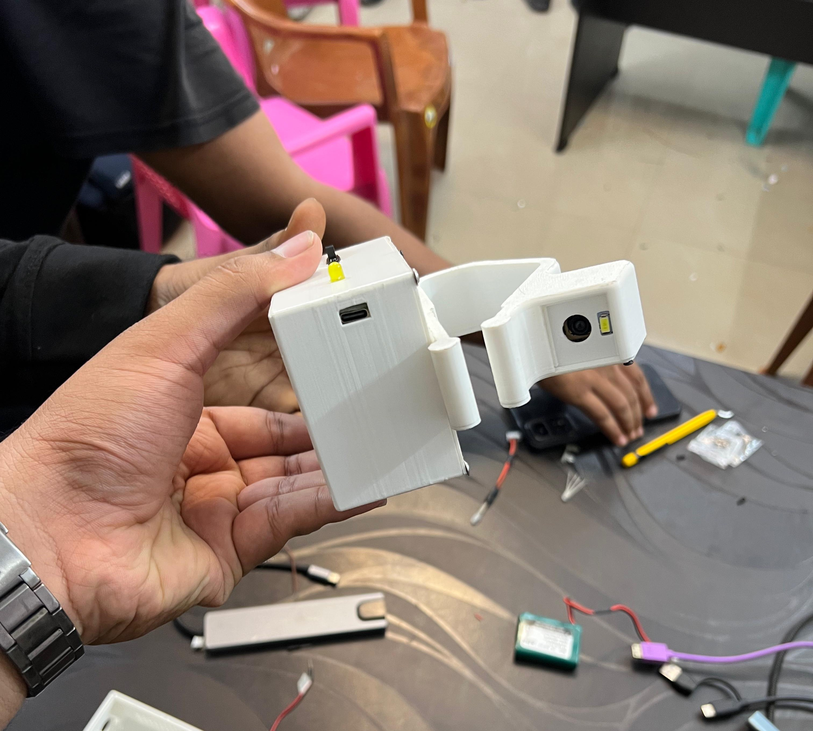
PiStream
Designed a Raspberry Pi-based smart surveillance platform combining real-time HD video streaming, audio spectrum analysis, and Firebase cloud backend. Fully controlled via a Flutter mobile app with push notifications and motion detection alerts.
View on LinkedInCareer Highlights
Achievements & Awards
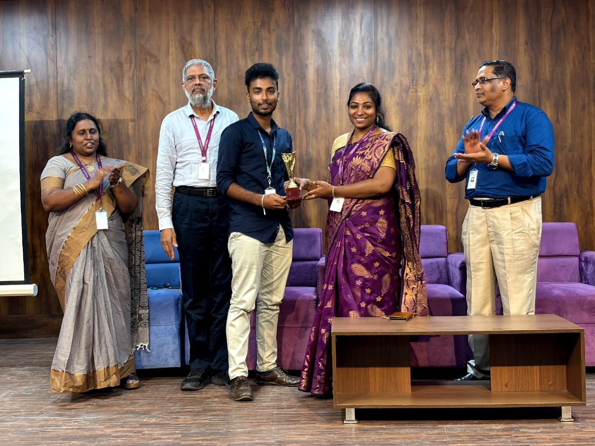
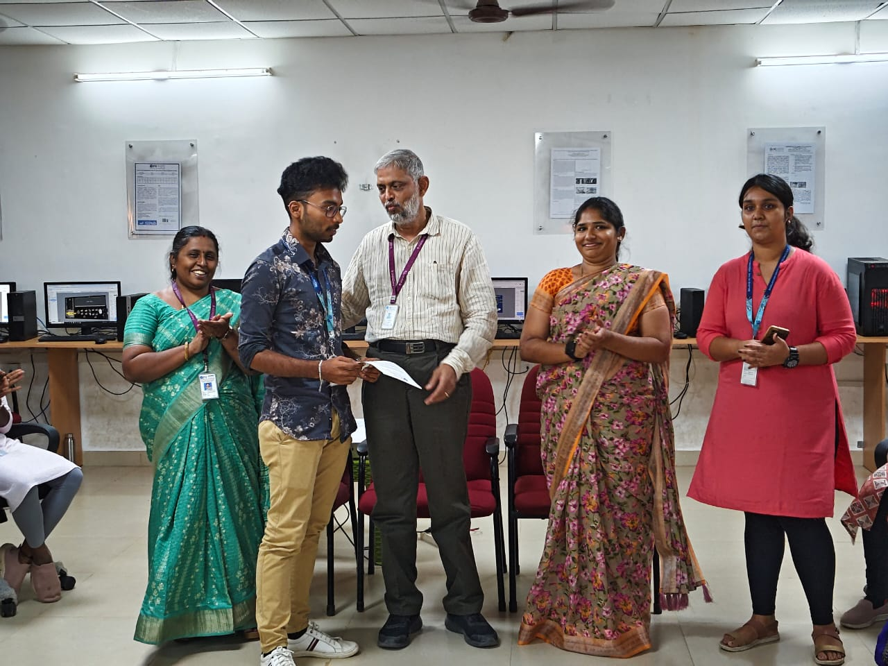
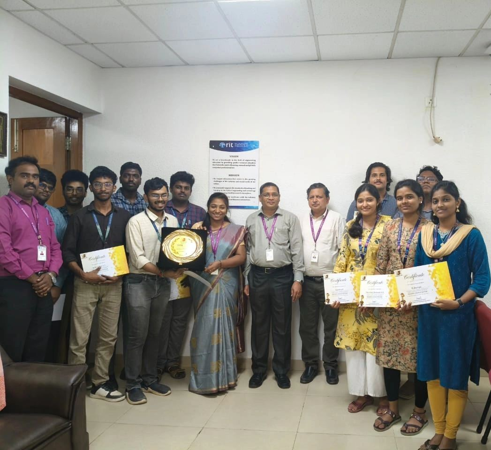
Centre of IoT – Core Team Member
Rajalakshmi Institute of Technology · IoT Research Center
View CertificateHackathons

Smart India Hackathon (SIH) 2025–26 – Grand Finale
MIC & AICTE · Hardware Edition · LPU, Phagwara · Dec 2025
LinkedIn Post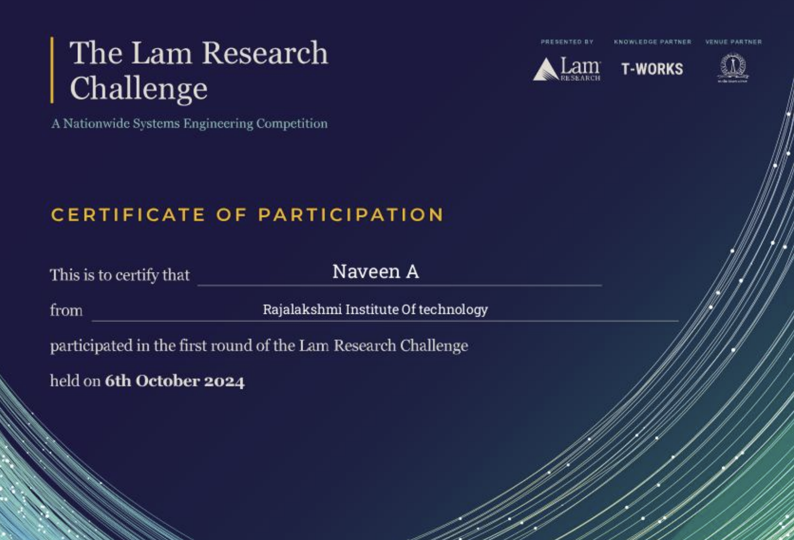
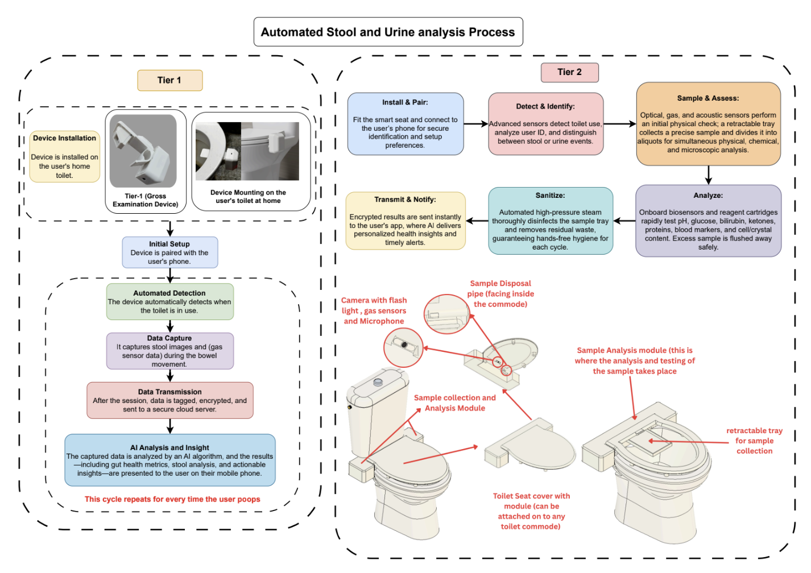
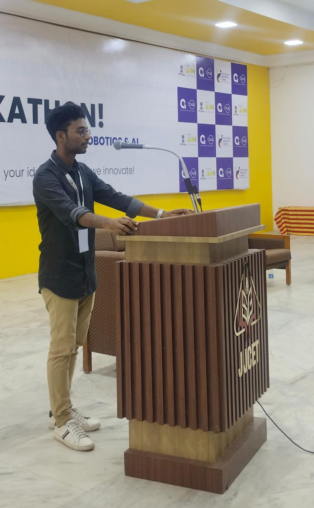
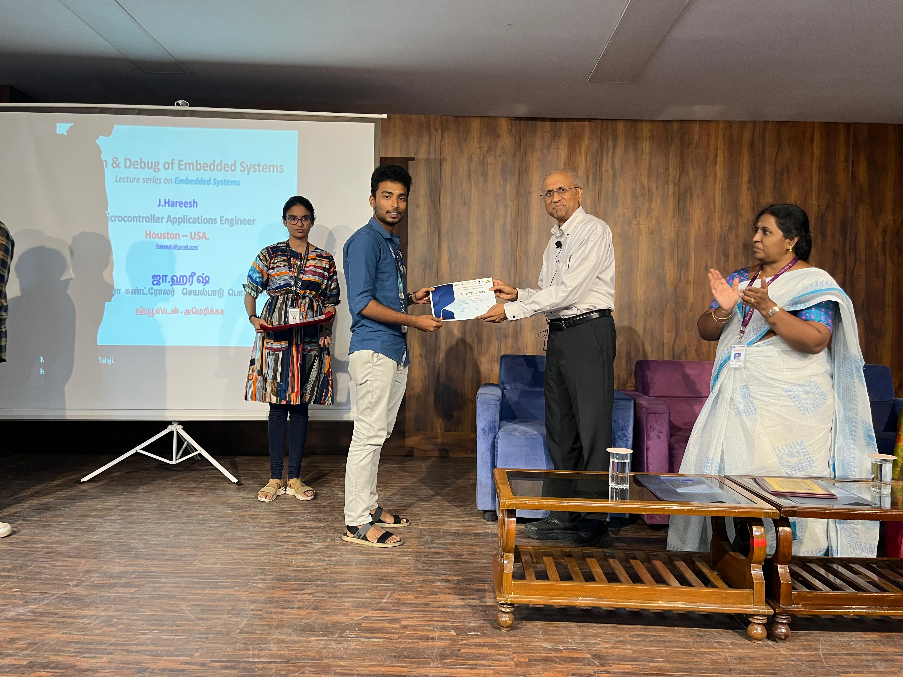
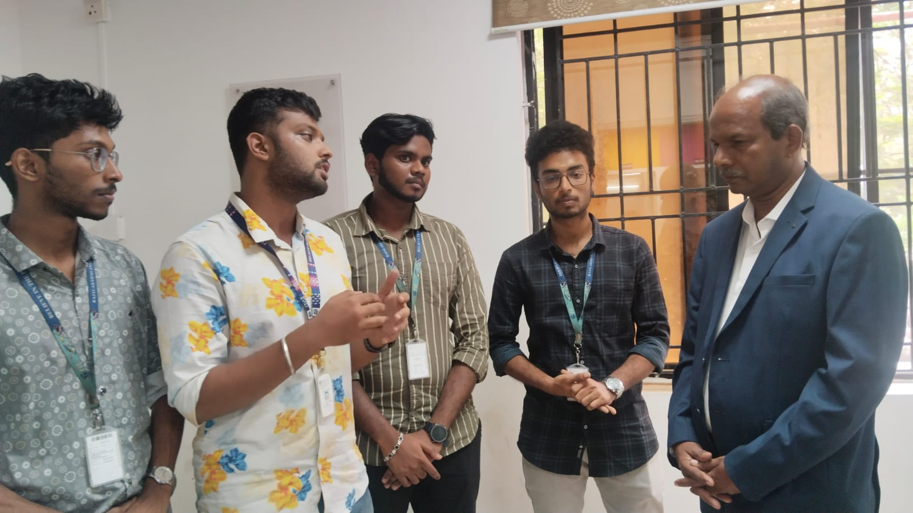
Courses & Certifications

Contact
Get In Touch
I'm always open to new opportunities, collaborations, and interesting conversations. Whether it's a VLSI project, embedded systems challenge, or just a hello — feel free to reach out!
- Chennai, Tamil Nadu, India
- navnofficial@gmail.com
- linkedin.com/in/navnofficial
- github.com/Navnofficial